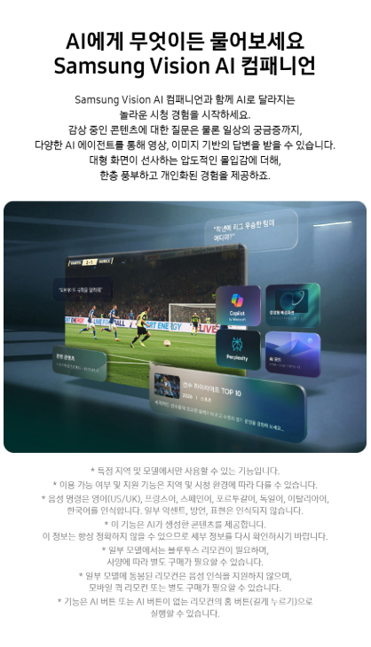

1. 삼성 Neo QLED AI TV 55인치은 어떤 제품일까?
55인치 화면과 AI 기반 영상·음향 보정 기능을 중심으로 거실과 가족 공간에서 균형 잡힌 시청 환경을 구성할 수 있는 프리미엄 TV입니다. 제품명만 보고 주문하기보다 사용할 공간과 목적, 정확한 모델 사양, 기본 구성품과 관리 방법을 확인하는 것이 중요합니다.
2. 55인치 55인치 화면
55인치는 대형 거실, 미디어룸, 회의실과 쇼룸에서 높은 몰입감을 제공합니다. 설치 벽면과 시청 거리, 반입 동선을 가장 먼저 확인해야 합니다.

3. Neo QLED와 명암 표현
정교한 백라이트 제어를 통해 밝은 부분과 어두운 부분을 세밀하게 표현하는 데 초점을 둡니다. 정확한 모델의 HDR 형식과 밝기, 로컬 디밍 구조를 확인하세요.
4. AI 영상·음향 보정
입력 영상의 해상도와 장면을 분석해 선명도와 색감, 노이즈를 조정하는 기능이 포함될 수 있습니다. 음향도 공간과 장면에 맞춰 보정되는지 확인하세요.
5. 반입과 전문 설치
엘리베이터와 출입문 폭, 복도 회전 공간을 확인하고 벽걸이 설치 시 벽체 하중을 전문 기사에게 점검받아야 합니다.
6. 콘텐츠와 연결 기기
55인치 화면에서는 저해상도 영상이 더 거칠게 보일 수 있습니다. 4K 이상의 콘텐츠와 셋톱박스, 콘솔, 홈시어터의 HDMI 규격을 확인하세요.
7. 구매 전 체크리스트
- 정확한 모델명과 색상을 확인합니다.
- 핵심 성능과 사용 환경이 맞는지 확인합니다.
- 기본 구성품과 별도 구매 부품을 확인합니다.
- 설치 공간과 전원, 배선 조건을 확인합니다.
- 관리 방법과 소모품 비용을 확인합니다.
- 배송, 교환, 반품과 보증 조건을 확인합니다.
싸게살래 가전·디지털 목록에서 다양한 제품 구매 가이드를 확인할 수 있습니다.
가전·디지털 전체 상품 보기 →자주 묻는 질문
구매 전에 가장 먼저 확인할 것은 무엇인가요?
정확한 모델명과 핵심 사양, 기본 구성품, 설치 조건과 보증 내용을 먼저 확인하는 것이 좋습니다.
온라인 상품 이미지만 보고 구매해도 되나요?
색상과 구성품은 옵션에 따라 달라질 수 있으므로 상품 상세정보와 최종 주문 화면을 함께 확인해야 합니다.
배송과 설치 조건은 어떻게 확인하나요?
대형 가전이나 설치형 제품은 지역과 현장 조건에 따라 배송 일정과 추가 비용이 달라질 수 있으므로 판매처 안내를 확인하세요.